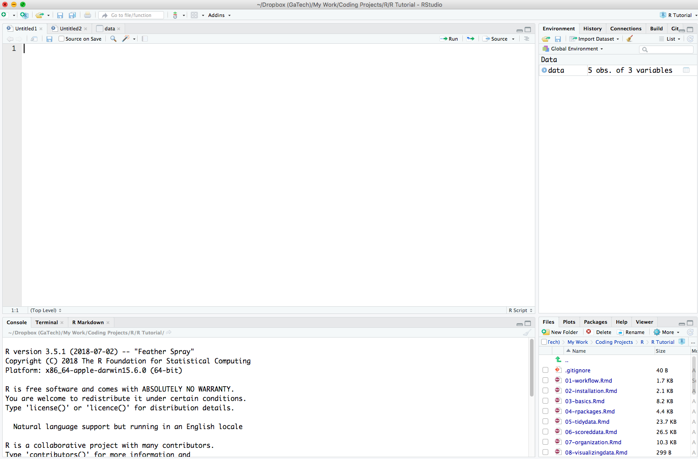

Chapter 1 Installation
1.1 Installing R
First you need to download the latest version of R from their website https://www.r-project.org
Select CRAN on the left, just under Download
Select the first option under 0-Cloud
Select the download option depending on your computer
Select the base installation (for Windows) or the Latest Release (for Mac)
Open and Run the installation file
1.2 Installing R Studio
The easiest way to interact with R is through the R Studio environment. To do this you need to install R Studio from https://www.rstudio.com/products/rstudio/download/#download
- Select the Free version of R Studio Desktop
- Select the download option depending on your computer
1.3 The R Studio Environemnt
Go ahead an open the RStudio application on your computer.
When you open a fresh session of RStudio there are 3 window panes open. The Console window, the Environment window, and the Files window. Go ahead and navigate to File -> New File -> R Script. You should now see something similar to the image below

There are 4 window panes and each one has it’s own set of tabs associated with it:
The Console window (the bottom left window pane) is where code is executed and output is displayed.
The Source window (the top left window pane) is where you will write your code to create a script file. When you open a new script file you will see a blank sheet where you can start writing the script. When you execute lines of code from here you will see it being executed in the Console window.
The Source window is also where you can view dataframes you have just imported or created. In the image above, notice the different tabs in the Source window. There are two “Untitled” script files open and one dataframe called ‘data’.
- The Environment window (top right window pane) is where you can see any dataframes, variables, or functions you have created. Go ahead and type the following in your Console window and hit enter.
hello <- "hello"You should now see the object hello in the Environment window pane
- The Files window (the bottom right window pane) is where you can see your computer’s directories, plots you create, manage packages, and see help documentation.
1.4 R Studio Settings
There are a few changes to R Studio settings I suggest you make. I will not go into why these are a good idea - so just do what I say! If you want to know you can talk to me about it.
Navigate to Tools -> Global Options
Change the settings to look like this:

Be sure to set ‘Save workspace to .RData on exit’ to Never
You can also change the “Editor Theme” if you navigate to the “Appearance” tab in Settings. Dark themes are easier on the eyes. I use Material dark theme.
Now you are ready to start writing some R code!